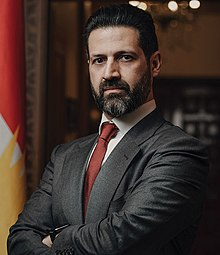

Qubad Talabani
Qubad Talabani | |
|---|---|
|  | |
| Deputy Prime Minister of Kurdistan Region Government | |
| Assumed office June 2014 | |
| Personal details | |
| Born | 21 July 1977 Damascus, Syria |
| Citizenship | Iraq United Kingdom |
| Nationality | Kurdish |
| Political party | Patriotic Union of Kurdistan |
| Spouse | Sherri Kraham |
| Relations | Bafel Talabani (brother) Lahur Talabany (cousin) |
| Parents |
|
| Residence | Kurdistan Region |
{kind=link}
Qubad Talabani (Kurdish: قوباد تاڵەبانی) (born 21 July 1977) is an Iraqi Kurdish politician who has been the Deputy Prime Minister of the Kurdistan Region since 2014. Formerly serving as the representative of Kurdistan to the United States, Qubad is the second son of former Iraqi President Jalal Talabani.
Early life[edit]
Deputy Prime Minister Talabani was born in 1977 and grew up in Surrey, United Kingdom with his maternal grandparents, Ibrahim Ahmed, a novelist, poet and a founder of the modern intellectual Kurdish movement and Galawejh Ahmed (also a novelist). His family has been involved in Kurdish politics for decades; His father, Jalal Talabani, was the President of the Republic of Iraq from 2005 until 2014.
After graduating from High School, he obtained a Diploma in Motor Vehicle Engineering at Carshalton College, and later received a degree in Mechanical Engineering at the Kingston University in London.[1]
Political career[edit]
From 2001 to 2003, Qubad worked as a special assistant to Barham Salih, at that time the Representative of the Patriotic Union of Kurdistan (one of Iraq's leading Kurdish political parties) in Washington D.C., and later as the Deputy PUK Representative.[2] In 2003, he returned to Kurdistan for one year and served as the PUK's Senior Foreign Relations officer to the coalition forces and the Coalition Provisional Authority. He also acted as a liaison officer between the PUK and U.S. military forces in Iraq.[3] He was a leading negotiator in the drafting of the Transitional Administrative Law (TAL), the first Iraqi constitution since the overthrow of Saddam Hussein.[2]
In April 2004, Qubad returned to the US, and was stationed as the Representative of the PUK and Kurdistan.
In 2006, with the unification of the two administrations in Kurdistan and following the forming of the Democratic Patriotic Alliance of Kurdistan and the establishment of the Kurdish National Assembly,[4] Qubad was appointed as the first representative of the Kurdistan Region, a position he has held until 2012[1] In 2014 he was nominated Deputy Prime Minister of the Government of the Kurdistan region and was involved in the implementation of the biometric registration system for government employees.[1]
He was first sworn in as Deputy Prime Minister of the KRG Cabinet[5] in June 2014, where he took office. Receiving no fiscal transfers from the Government of Iraq (GoI), coupled with rapidly declining oil prices, the Kurdistan region was in the midst of a severe financial crisis.[6] Moreover, the Islamic State was rampaging its way throughout Iraq, claiming territory and establishing itself as one of history's most brutal terrorist organizations, resulting in a major humanitarian crisis that forced 1.8 million people to flee war and violence and seek refuge in the Kurdistan region.[7] During this period, the KRG successfully oversaw a package of reforms.

A major part of the KRG's economic reform plan included improving oversight of government expenditures. To that end, Talabani successfully oversaw the design and implementation of his government's biometric registration program.[1]
During the KRG's Seventh Cabinet, Talabani established and headed up the Department of Coordination and Follow-up to facilitate inter-ministerial coordination. He directed that KRG agency on behalf of the Prime Minister for two years.
In the parliamentary elections of the Kurdistan region of 2018[1] he was elected to parliament but he did not assume his post.[8]
In the fourth congress of the PUK in December 2019, he was appointed to the leadership council of the PUK.[9]
Personal life[edit]
Talabani is the son of Jalal Talabani and Hero Ibrahim Ahmed and lives in Erbil with his wife Sherri Kraham to who he got married in 2005 in Il Castello del Palagio in Italy.[10] The couple have two children, Ari and Lara.
References[edit]
- ^ a b c d e "Qubad Talabani". Kurdistan Regional Government. Retrieved 2020-01-15.
 This article incorporates text available under the CC BY 4.0 license.
This article incorporates text available under the CC BY 4.0 license.
- ^ a b The Huffington Post
- ^ IRAQI PRESIDENT'S SON TO SPEAK ON IRAQ'S FUTURE
- ^ "The Scion Kurdistan's man in Washington By Laura Rozen". Archived from the original on 2016-04-03. Retrieved 2014-07-06.
- ^ "Nechirvan Barzani Commends the 8th Cabinet of the Kurdistan Regional Government". President of the Kurdistan Region of Iraq. 2019-07-06. Retrieved 2020-01-18.
- ^ Kurdistan24. "KRG alone in solving financial crisis". Kurdistan24. Retrieved 2020-01-18.
- ^ Iraqis seeks refuge in Kurdish north
- ^ Kurdistan24. "Qubad Talabani, two other MPs relinquish seats in Kurdistan parliament". Kurdistan24. Retrieved 2020-01-15.
- ^ "PUK appoints senior officials in long-overdue congress, to elect leader Monday". www.kurdistan24.net. Retrieved 2020-05-23.
- ^ "DIPLOMATIC WEDDING IN CHIANTI - Chianti Classico Magazine". 2008-02-12. Archived from the original on 2008-02-12. Retrieved 2019-07-28.